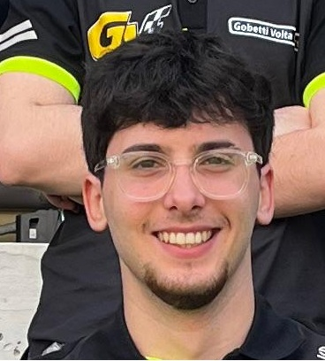
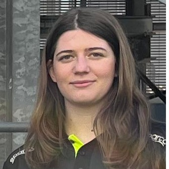
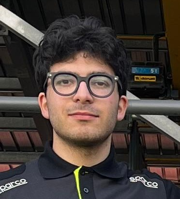

Team Biographies
Giulio Folli
Giulio coordinates the entire team, managing deadlines and streamlining communication between all departments. His leadership is essential to keeping the project on track and ensuring high-quality results.

Maksym Zvozdyak
Maksym is responsible for the technical 3D design phase. He transforms aerodynamic concepts into precise digital models, optimizing them for high-performance 3D printing.

Allegra Masoni
Allegra manages external relations and sponsorship strategies. She ensures our partners are well-represented and maintains professional communication with all stakeholders.

Emma Cappelli
Emma curates the team's digital presence. Through storytelling and content creation, she shares our progress and technical milestones with our community and sponsors.

Tommaso Savarese
Tommaso handles data collection and technical research. His analytical approach provides the team with the necessary insights to optimize materials and performance metrics.

Neri Casatello
Neri is the expert in charge of the car's physical assembly. He bridges the gap between design and reality, ensuring that every component is perfectly manufactured and race-ready.